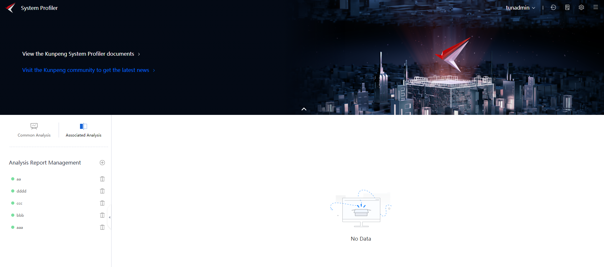

Function
You can select the same node or different nodes to compare the results of the same type of analysis tasks. In this way, you can quickly obtain the differences between different analysis structures, locate the changes of performance counters, and identify the effect of optimization methods.
Prerequisites
You have logged in to the System Profiler WebUI.
Procedure
- Click
 on the home page.
on the home page.The Analysis Report Management page is displayed.
Figure 1 Page for associated analysis
 - Click
 next to Analysis Report Management.
next to Analysis Report Management.The Create Associate Analysis Task page is displayed.
- Set the required parameters as shown in Figure 2. Table 1 describes the parameters.Click Horizontal Analysis or Vertical Analysis and select the objects to be analyzed.

- Tasks that are not in the same scenario are not displayed.
- Tasks that do not comply with the current comparison mode are not selected.
- If the components of a task are different (for example, in the database scenario, openGauss is different from MySQL), a dialog box is displayed.
Table 1 Parameters for creating an analysis task Parameter
Description
Selecting a scene
Select the scenario to be analyzed.
The options are General Scenario, Big Data, Database, and Distributed Storage.
Task Name
Enter a task name. The name must meet the following requirements:
- Contains only letters, digits, and special characters (including @#$ %^&*()[]<>._-!-+ and spaces).
- Contain 1 to 32 characters.
Select comparison object
Select Overall Analysis and Hotspot Function Analysis.
Select Hotspot Function Analysis to view the tab page displaying differential flame graphs.
Horizontal analysis is to compare the analysis results of multiple nodes in the same task of the same project. Vertical analysis is to compare the analysis results of two nodes in different tasks.
- Click OK.
You can click
 next to the task name to delete all data related to the task. Exercise caution when performing this operation.
next to the task name to delete all data related to the task. Exercise caution when performing this operation. - After the analysis is complete, click the task name.
On the Configuration Data tab page displayed by default, view the configuration data details, as shown in Figure 3.
- Items with different configurations are marked with
 . You can click View Details to view the detailed differences in vertical comparison or horizontal comparison.
. You can click View Details to view the detailed differences in vertical comparison or horizontal comparison. - You can configure different options and click View Details to view different details in the pop-up window.
- Items with different configurations are marked with
- Click the Performance Data tab.
On the Performance Data tab page, view the performance data details, as shown in Figure 4.
- By default, no data is displayed for storage I/O and network I/O. You can click
 to filter objects. A maximum of 10 objects can be selected.
to filter objects. A maximum of 10 objects can be selected. - You can select an item from the drop-down list to display the corresponding data.
Figure 5 Performance data in the I/O area
- By default, no data is displayed for storage I/O and network I/O. You can click
- Click the Hot Flame Graph or Cold Flame Graph tab.
On the Hot Flame Graph tab page, view the detailed running information about the application, as shown in Figure 6.
- The upper part aggregates the macro indicators of the current flame graph application, including the clock cycle, execution instruction value, IPC, operating system, and host name. The lower part lists the differential flame graphs selected by users. There is a search module at the top of the flame graph. The searched functions turn purple.
- The differential flame graph can only indicate the difference between two flame graphs. Therefore, when the number of comparison tasks is greater than 2, you need to select the base node and comparison node. Only one flame graph can be displayed at a time.